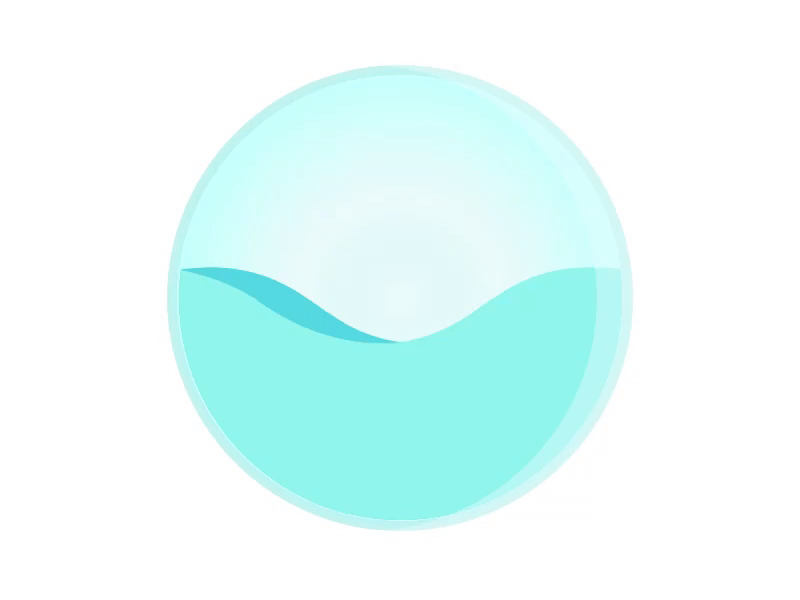

<!DOCTYPE html>
<html lang="en">

<head>
    <meta charset="UTF-8">
    <meta name="viewport" content="width=device-width, initial-scale=1.0">
    <title>Water Quality Dashboard</title>
    <script defer src="https://cdn.jsdelivr.net/npm/alpinejs@3.x.x/dist/cdn.min.js"></script>
    <script src="https://cdn.jsdelivr.net/npm/chart.js"></script>


    <link href="stylesheet/styles.css" rel="stylesheet" />
</head>

<body x-data="waterQualityApp">
    <!-- Sidebar -->
    <aside class="sidebar">

        <div class="header">

            <!--Content before waves-->
            <div class="inner-header flex">
                <path fill="#FFFFFF" stroke="#000000" stroke-width="10" stroke-miterlimit="10" d="M57,283" />
                <g>
                    <path fill="#fff"
                        d="M250.4,0.8C112.7,0.8,1,112.4,1,250.2c0,137.7,111.7,249.4,249.4,249.4c137.7,0,249.4-111.7,249.4-249.4
C499.8,112.4,388.1,0.8,250.4,0.8z M383.8,326.3c-62,0-101.4-14.1-117.6-46.3c-17.1-34.1-2.3-75.4,13.2-104.1
c-22.4,3-38.4,9.2-47.8,18.3c-11.2,10.9-13.6,26.7-16.3,45c-3.1,20.8-6.6,44.4-25.3,62.4c-19.8,19.1-51.6,26.9-100.2,24.6l1.8-39.7		c35.9,1.6,59.7-2.9,70.8-13.6c8.9-8.6,11.1-22.9,13.5-39.6c6.3-42,14.8-99.4,141.4-99.4h41L333,166c-12.6,16-45.4,68.2-31.2,96.2	c9.2,18.3,41.5,25.6,91.2,24.2l1.1,39.8C390.5,326.2,387.1,326.3,383.8,326.3z" />
                </g>
                </svg>
                <h2>Water Quality Dashboard</h2>

                <ul>
                    <li><a href="index.html">Home</a></li>
                    <li><a href="indexf.html">Forum</a></li>
                    <li><a href="#"> <button @click="openModal()" class="add-sample-btn">Add New Sample</button></a>
                    </li>
                    <li><a href="about.html">Information</a></li>
                    <li><a href="#"> <button @click="downloadCSV" class="show-history-button">Download All Data as
                                CSV</button></a></li>
                </ul>
            </div>


            <!--Waves Container-->
            <div>
                <svg class="waves" xmlns="http://www.w3.org/2000/svg" xmlns:xlink="http://www.w3.org/1999/xlink"
                    viewBox="0 24 190 28" preserveAspectRatio="none" shape-rendering="auto">
                    <defs>
                        <path id="gentle-wave"
                            d="M-160 44c30 0 58-18 88-18s 58 18 88 18 58-18 88-18 58 18 88 18 v44h-352z" />
                    </defs>
                    <g class="parallax">
                        <use xlink:href="#gentle-wave" x="48" y="0" fill="rgba(255,255,255,0.7" />
                        <use xlink:href="#gentle-wave" x="48" y="3" fill="rgba(255,255,255,0.5)" />
                        <use xlink:href="#gentle-wave" x="48" y="5" fill="rgba(255,255,255,0.3)" />
                        <use xlink:href="#gentle-wave" x="48" y="7" fill="#fff" />
                    </g>
                </svg>
            </div>
    </aside>
    <main class="content">
        <div class="main-content">
            <div class="header-buttons">
                <a href="index.html" class="home-button">Home</a>
                <div class="dropdown">
                    <a href="indexf.html">Forum</a>
                    <a href="#">
                        <button @click="openModal()" class="add-sample-btn">Add New Sample</button>
                    </a>
                    <a href="#">Information</a>
                    <a href="#">
                        <button @click="downloadCSV" class="show-history-button">Download All Data as CSV</button>
                    </a>
                </div>
            </div>
            <h1 class="fancy-title">Water Quality Overview <a href="#"><i class='fas fa-user-circle'
                        style='font-size:42px'></i></a></h1>

            <h2 class="fancy-title-2">Sample Data ID: <span x-text="samples[samples.length - 1]?.id"></span></h2>

            <!-- Modal for Adding New Sample -->
            <div x-show="isModalOpen" @click.away="closeModal()" class="modal-container">
                <div class="modal-content">
                    <h2>Add New Water Sample</h2>
                    <form @submit.prevent="submitSample">
                        <button type="button" @click="setSafeSample()">Add Safe Values</button>
                        <button type="button" @click="setUnsafeSample()">Add Unsafe Values</button>
                        <label for="aluminium">Aluminium:</label>
                        <input type="number" id="aluminium" x-model="newSample.aluminium" step="0.000001" required>

                        <label for="ammonia">Ammonia:</label>
                        <input type="number" id="ammonia" x-model="newSample.ammonia" step="0.000001" required>

                        <label for="arsenic">Arsenic:</label>
                        <input type="number" id="arsenic" x-model="newSample.arsenic" step="0.000001" required>

                        <label for="barium">Barium:</label>
                        <input type="number" id="barium" x-model="newSample.barium" step="0.000001" required>

                        <label for="cadmium">Cadmium:</label>
                        <input type="number" id="cadmium" x-model="newSample.cadmium" step="0.000001" required>

                        <label for="chloramine">Chloramine:</label>
                        <input type="number" id="chloramine" x-model="newSample.chloramine" step="0.000001" required>

                        <label for="chromium">Chromium:</label>
                        <input type="number" id="chromium" x-model="newSample.chromium" step="0.000001" required>

                        <label for="copper">Copper:</label>
                        <input type="number" id="copper" x-model="newSample.copper" step="0.000001" required>

                        <label for="fluoride">Fluoride:</label>
                        <input type="number" id="fluoride" x-model="newSample.fluoride" step="0.000001" required>

                        <label for="bacteria">Bacteria:</label>
                        <input type="number" id="bacteria" x-model="newSample.bacteria" step="0.000001" required>

                        <label for="viruses">Viruses:</label>
                        <input type="number" id="viruses" x-model="newSample.viruses" step="0.000001" required>

                        <label for="lead">Lead:</label>
                        <input type="number" id="lead" x-model="newSample.lead" step="0.000001" required>

                        <label for="nitrates">Nitrates:</label>
                        <input type="number" id="nitrates" x-model="newSample.nitrates" step="0.000001" required>

                        <label for="nitrites">Nitrites:</label>
                        <input type="number" id="nitrites" x-model="newSample.nitrites" step="0.000001" required>

                        <label for="mercury">Mercury:</label>
                        <input type="number" id="mercury" x-model="newSample.mercury" step="0.000001" required>

                        <label for="perchlorate">Perchlorate:</label>
                        <input type="number" id="perchlorate" x-model="newSample.perchlorate" step="0.000001" required>

                        <label for="radium">Radium:</label>
                        <input type="number" id="radium" x-model="newSample.radium" step="0.000001" required>

                        <label for="selenium">Selenium:</label>
                        <input type="number" id="selenium" x-model="newSample.selenium" step="0.000001" required>

                        <label for="silver">Silver:</label>
                        <input type="number" id="silver" x-model="newSample.silver" step="0.000001" required>

                        <label for="uranium">Uranium:</label>
                        <input type="number" id="uranium" x-model="newSample.uranium" step="0.000001" required>

                        <button type="submit">Submit</button>
                        <button type="button" @click="closeModal()">Cancel</button>
                    </form>
                </div>
            </div>
            <!-- Chat button -->
            <button id="open-chat-btn">Chat with AquaBot</button>

            <!-- Chat overlay -->
            <div id="chat-overlay">
                <div id="chat-window">
                    <div id="chat-header">AquaBot</div>
                    <span id="chat-close">&times;</span>
                    <div id="chat-history"></div>
                    <form id="chat-form">
                        <div id="chat-input-container">
                            <input type="text" id="user-input" placeholder="Type your message here...">
                            <button id="send-btn" type="submit">Send</button>
                        </div>
                    </form>
                </div>
            </div>
            <div id="loader">
                
            </div>

            <!-- <button @click="openModal()">Add New Sample</button> -->
            <div class="tab-container">
                <div x-data="{ tab: 'tab1' }">
                    <!-- Tabs -->
                    <div class="tabs">
                        <div @click="tab = 'tab1'" :class="{'active': tab === 'tab1'}" class="tab">Analysis</div>
                        <div @click="tab = 'tab2'" :class="{'active': tab === 'tab2'}" class="tab">View Contaminants
                        </div>
                        <div @click="tab = 'tab3'" :class="{'active': tab === 'tab3'}" class="tab">View Full History
                        </div>
                    </div>


                    <div x-show="tab === 'tab1'" class="tab-content" :class="{'active': tab === 'tab1'}">
                        <h2 class="fancy-title-2">Analysis of the Contaminants</h2>
                        <h2 class="fancy-title-2">Pie Chart</h2>
                        <p>This pie chart displays the composition of various chemical contaminants in a water sample.
                            Each section represents a different contaminant, like fluoride, ammonia, or arsenic, with
                            the size of each slice showing its percentage in the water. The color-coded legend above the
                            chart helps identify each contaminant, making it easier to understand the water's quality
                            and the relative amounts of substances present.</p>
                        <div class="flex-container">
                            <div class="flex-container">
                                <canvas id="waterChart" width="400" height="400"></canvas>
                            </div>
                            <br>
                            <br>
                            <br>
                            <strong class="fancy-title-2">Line Chart</strong>
                            <p> The line chart displays water quality data over time, allowing users to easily track
                                levels of various contaminants. </p>
                            <ul>
                                <span style="color: #99AABB;">● X-Axis</span>: Represents sample values, showing when
                                each water sample was collected.
                                <span style="color: #99AABB;">● Y-Axis</span>: Indicates the concentration levels of
                                contaminants measured in the samples.
                                <span style="color: #99AABB;">● Threshold Lines</span>: Horizontal lines represent
                                safety limits for each contaminant. If a contaminant's line exceeds its threshold, it
                                indicates a potential safety risk.

                            </ul>
                            <div class="flex-container">
                                <canvas id="lineChart" width="400" height="400"></canvas>
                            </div>

                        </div>
                    </div>

                    <!-- Tab Content -->
                    <div x-show="tab === 'tab2'" class="tab-content" :class="{'active': tab === 'tab2'}">
                        <h2 class="fancy-title-2">Contaminants</h2>
                        <strong>Key</strong>
                        <ul>
                            <span style="color: green;">● Safe</span>: Indicates contaminant levels within safe limits.
                            <span style="color: red;">● Unsafe</span>: Highlights when contaminant levels exceed safety
                            thresholds.
                        </ul>
                        <div class="grid">
                            <template x-for="(contaminant, index) in contaminants" :key="index">
                                <div :class="getClass(contaminant)">
                                    <h3 x-text="contaminant.name"></h3>
                                    <p>Threshold: <span x-text="contaminant.threshold"></span></p>
                                    <p>Value: <span x-text="getSampleValue(contaminant.name)"></span></p>
                                </div>
                            </template>
                        </div>
                    </div>
                    <div x-show="tab === 'tab3'" class="tab-content" :class="{'active': tab === 'tab3'}">
                        <h2 class="fancy-title-2">Previous Water Samples</h2>

                        <table border="1">
                            <thead>
                                <tr>
                                    <th>ID</th>
                                    <th>Aluminium</th>
                                    <th>Ammonia</th>
                                    <th>Arsenic</th>
                                    <th>Barium: </th>
                                    <th>Cadmium:</th>

                                    <th>Chloramine:</th>

                                    <th>Chromium:</th>

                                    <th>Copper:</th>

                                    <th>Fluoride:</th>

                                    <th>Bacteria:</th>

                                    <th>Viruses:</th>

                                    <th>Lead:</th>

                                    <th>Nitrates:</th>

                                    <th>Nitrites:</th>

                                    <th>Mercury:</th>

                                    <th>Perchlorate:</th>

                                    <th>Radium:</th>

                                    <th>Selenium:</th>

                                    <th>Silver:</th>

                                    <th>Uranium:</th>

                                    <th>Safe Status</th>
                                </tr>
                            </thead>
                            <tbody>
                                <template x-for="sample in samples" :key="sample.id">
                                    <tr>
                                        <td x-text="sample.id"></td>
                                        <td x-text="sample.aluminium"></td>
                                        <td x-text="sample.ammonia"></td>
                                        <td x-text="sample.arsenic"></td>
                                        <td x-text="sample.barium"></td>
                                        <td x-text="sample.cadmium"></td>
                                        <td x-text="sample.chloramine"></td>
                                        <td x-text="sample.chromium"></td>
                                        <td x-text="sample.copper"></td>
                                        <td x-text="sample.fluoride"></td>
                                        <td x-text="sample.bacteria"></td>
                                        <td x-text="sample.viruses"></td>
                                        <td x-text="sample.lead"></td>
                                        <td x-text="sample.nitrates"></td>
                                        <td x-text="sample.nitrites"></td>
                                        <td x-text="sample.mercury"></td>
                                        <td x-text="sample.perchlorate"></td>
                                        <td x-text="sample.radium"></td>
                                        <td x-text="sample.selenium"></td>
                                        <td x-text="sample.silver"></td>
                                        <td x-text="sample.uranium"></td>

                                        <td x-text="sample.is_safe ? 'Safe' : 'Contaminated'"></td>
                                        <!-- <td>
                                            <button @click="deleteSample(sample.id)">Delete</button>
                                        </td> -->
                                    </tr>
                                </template>
                            </tbody>
                        </table>
                    </div>
                </div>
            </div>
        </div>
    </main>
    <script src="alpined.js"></script>
    <script>
        document.addEventListener('DOMContentLoaded', () => {
            const openChatBtn = document.getElementById('open-chat-btn');
            const chatOverlay = document.getElementById('chat-overlay');
            const chatCloseBtn = document.getElementById('chat-close');
            const chatForm = document.getElementById('chat-form');
            const chatHistory = document.getElementById('chat-history');
            const userInput = document.getElementById('user-input');
            const loader = document.getElementById('loader');

            // Toggle chat overlay visibility
            openChatBtn.addEventListener('click', () => {
                chatOverlay.style.display = 'flex'; // Show chat overlay
            });

            chatCloseBtn.addEventListener('click', () => {
                chatOverlay.style.display = 'none'; // Hide chat overlay
            });

            chatForm.addEventListener('submit', async (event) => {
                event.preventDefault();
                const message = userInput.value;
                userInput.value = ''; // Clear input

                // Add user message to chat
                chatHistory.innerHTML += `<div class="user-message">${message}</div>`;
                chatHistory.scrollTop = chatHistory.scrollHeight; // Scroll to bottom

                loader.style.display = 'block'; // Show the loader

                try {
                    // Send message to server
                    const response = await fetch('/api/aquaBot/chat', { // Ensure the endpoint is correct
                        method: 'POST',
                        headers: { 'Content-Type': 'application/json' },
                        body: JSON.stringify({ userInput: message })
                    });

                    // Check if the response is OK
                    if (!response.ok) {
                        throw new Error('Network response was not ok: ' + response.statusText);
                    }

                    const data = await response.json();

                    // Check if the data structure is as expected
                    if (!data || !data.response) {
                        throw new Error('Response is undefined');
                    }

                    const botMessage = data.response;

                    // Display AquaBot's response
                    chatHistory.innerHTML += `<div class="bot-message">${botMessage}</div>`;
                } catch (error) {
                    console.error("Error:", error);
                    chatHistory.innerHTML += `<div class="bot-message">Error: ${error.message}</div>`; // Display error message
                } finally {
                    loader.style.display = 'none'; // Hide the loader after the message is sent
                    chatHistory.scrollTop = chatHistory.scrollHeight; // Scroll to bottom after loading
                }
            });
        });
    </script>


</body>

</html>